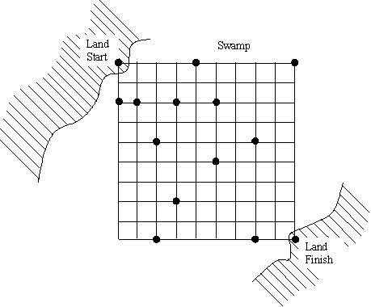

Home Page
F.A.Qs
Statistical Charts
Past Contests
Scheduled Contests
Award Contest
| Online Judge | Problem Set | Authors | Online Contests | User | ||||||
|---|---|---|---|---|---|---|---|---|---|---|
| Web Board Home Page F.A.Qs Statistical Charts | Current Contest Past Contests Scheduled Contests Award Contest | |||||||||
|
Language: PLANKS
Description Build a bridge over a swamp by connecting tree stumps with planks.
You are being chased by cannibals and you must figure out a way to get across a crocodile-infested swamp. The swamp contains tree stumps which are thankfully spaced on a regular, 10x10, grid, where each grid point is 1 foot apart. In addition, there are thankfully some planks nearby that can be placed across the tree stumps. The tree stump at the upper left corner of the grid is on land, as is the tree stump on the opposite bank of the swamp at the lower right. You must figure out a layout of the planks that will get you across the swamp. Each plank can only be used once and must start and end on a tree stump. In addition, the planks must follow the grid horizontally or vertically -- no diagonally placed planks are allowed. This scenario is illustrated by the following figure.  A given problem may have more than one solution, but you are required to find only one solution. Your solution does not have to be the most efficient, and you can use any combination of the planks. A valid solution can contain planks that cross over each other. Input The input contains one or more problems for a given swamp. The swamp is defined as a 10 by 10 grid of characters. Each period (".") represents open space and each asterik ("*") represents a stump. Each plank problem is defined on one input line after the swamp definition. The first number on the line is the number of planks available (max of 20). The remaining numbers are the lengths of the available planks. Each plank is assigned a number based on its order in the list. For example, in line 11, plank 1 is 9 ft long, plank 2 is 9 ft long, plank 3 is 5 ft long, and plank 4 is 8 ft long. Output Each line of the output contains the placement of one plank to a specific stump, as shown in the sample output below. (Use the exact same wording and formating for your output.) The plank order given by the output should take you from stump (1,1) to stump (10,10). If no solution is possible with the specified planks, print "no solution possible." Print a single blank line after each problem solution. Sample Input *...*....* .......... **.*.*.... .......... ..*....*.. .....*.... .......... ...*...... .......... ..*....*.* 4 9 9 5 8 3 9 2 3 8 2 3 4 5 6 7 8 9 Sample Output place plank 1 to stump (1,10) place plank 2 to stump (10,10) no solution possible place plank 3 to stump (1,5) place plank 4 to stump (1,10) place plank 8 to stump (10,10) Source | ||||||||||
[Submit] [Go Back] [Status] [Discuss]
All Rights Reserved 2003-2013 Ying Fuchen,Xu Pengcheng,Xie Di
Any problem, Please Contact Administrator